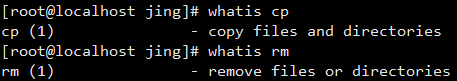
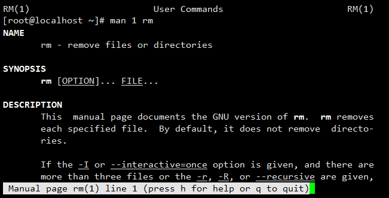

LINUX —— HELP
一、命令帮助
（一）内部命令
- help <command>
- man <command>
（二）外部命令
- command --help | command-h
- 使用手册[manual] —— man command
- 信息页 —— info command
- 程序自身的帮助文档 —— readme、changelog
- 程序官方文档 —— Documentation
- 发行版的官方文档
- Google | Baidu
（三）--help | -h 选项
- [ ] 表示可选项
- __CAPS | <>__表示变化的数据
- | * | 表示 “或”
- { } 表示分组
二、whatis —— 显示命令的简短描述
- 使用示例 —— whatis [command]
- 使用数据库
- 刚安装后不可立即使用
- makewhatis | mandb 制作数据库
- 命令后的序号为 man 帮助的章节号 cp(1) ==> man 1 rm
 
三、man 章节简介
- 用户命令
- 系统调用
- C库调用
- 设备文件及特殊文件
- 配置文件格式
- 游戏
- 杂项
- 管理类命令
- LINUX 内核API
四、man 基础知识
- man ——提供命令帮助的文件
- 手册页[Manuals]存放位置 /usr/share/man
- 几乎所有命令都有 man 的页面
- man 页面分为不同的章节；统称为 Linux 手册
- man 命令的配置文件—— /etc/man.config | man_db.conf [ MANPATH /PATH/TO/SOMEWHERE: 指明man文件搜索位置]
- man -M /PATH/TO/SOMEWHERE —— 到指定位置下搜索
- 中文 man 需安装 man-pages-zh-CN
五、man 帮助手册段落说明
- NAME 名称及简要说明
- SYNOPSIS 用法格式说明
- DESCRIPTION 详细说明
- OPTIONS 选项说明
- EXAMPLES 示例
- FILES 指定文件
- AUTHOR 作者
- COPYRIGHT 版本信息
- PEFORTING BUGS bug 信息
- SEE ALSO 其他帮助信息
六、man 使用示例
- man [章节] keyword —— 查看 man 手册页
- man -a keyword —— 列出所有帮助
- man -k keyword —— 列出所有匹配的页面 [ 使用 whatis 数据库 <==> man -f keyword ] ====> 搜索 man 手册
- man -w [章节] keyword —— 打印 man 帮助文件的路径
- /keyword | ?keyword 以keyword指定的关键字，从当前位置向文件尾部 | 首部搜索，不区分大小写 [ n|N 切换 keyword 条目 ]
七、info 帮助
- man 常用于命令参考，GNU工具 info 适合通用文档参考
- 没有参数，列出所有页面
- info 页面的结构像一个网站
- 每一页分为 “节点”
- 链接点之前有 *
> 导航info页
- \
移动到下一个链接 - d 显示主题目录
- \
进入选定链接 - n | p | u | l 进入下 | 前 | 上一层 | 最后一个链接
- s keyword 文本搜索
- q 退出 info
相关链接
搜索指南 —— Openstack filetype:pdf | rhce site:redhat.com/docs